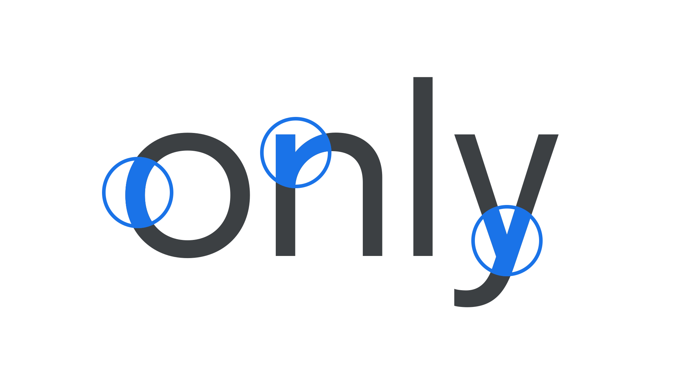

Monolinear
By Google Fonts Knowledge contributors · Google Fonts Knowledge.
Original article · Source on GitHub · CC BY-SA 4.0. Text, illustrations and existing credits reproduced from the licensed Knowledge repository. Open Shelf adapted the layout and links; these adaptations are also CC BY-SA 4.0. No endorsement implied.
When a letterform’s stroke exhibits a consistent thickness—i.e., little or no contrast—the typeface is said to be “monolinear.” Typically, sans serifs and slab serifs have less contrast than serifs.

Even where the strokes join, note how their thickness remains the same (or optically appears to be the same).
Examples of Monolinear typefaces include Poppins and Montserrat.